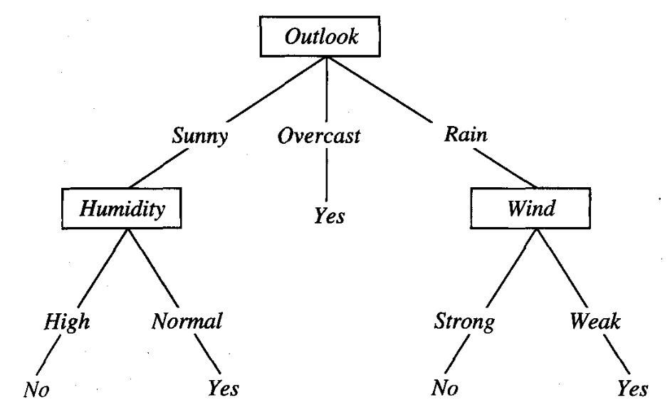
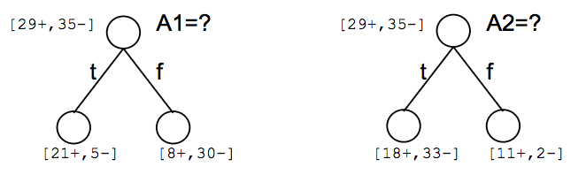

Introduction to Machine Learning and Data Mining
Kyle I S Harrington / kharrington@uidaho.edu
Some slides adapted from K. Harrington's CS-135 Machine Learning course at Tufts University.
Who Likes Tennis?
|
Class: Play tennis? Attributes:
|
Who Likes Tennis?
Decision Trees
Representation of a Decision Tree
Nodes are attributes
Branches are values of attributes
Leafs are classes
Decision Trees
- Choose the best attribute, $A$, for the next node
- Create a node for $A$
- Create branches for each possible value of $A$
- Sort all observations into leaves
- If all observations are perfectly classified,
then stop,
else recur.
How do we choose the best attribute?
Choosing an Attribute
Which is better A1 or A2?
Entropy
Entropy describes how unpredictable information is.
|
Entropy
$Entropy(S)$ is the expected number of bits needed to encode a class of a randomly drawn member of the sample set (under the optimal, shortest-length code)
Entropy
An optimal length code uses $-log_2 p$ bits to encode a message of probability p
i.e. if $p=0.01$, then the optimal code length is $6.64$
and if $p=0.99$, then the optimal code length is $0.01$
Entropy
Recall that our sample set $S$ has $p_\oplus$ and $p_\ominus$ proportions of $\oplus$ and $\ominus$ classes
Hence, to encode a random member of $S$, weigh the probability of drawing a member of the class by the optimal length code of the class:
$p_\oplus (-log_2 p_\oplus) + p_\ominus ( -log_2 p_\ominus )$
$Entropy(S) \equiv -p_\oplus log_2 p_\oplus - p_\ominus log_2 p_\ominus$
Choosing an Attribute
How can we use entropy in this decision?
Information Gain
$Gain(S,A)$ is the expected reduction in entropy by sorting on attribute $A$
$Gain(S,A) \equiv Entropy(S) - \displaystyle \sum_{v \in Values(A)} \frac{|S_v|}{|S|} Entropy(S_v)$
Information Gain Example

Building a Tree Example
|

|
Building a Tree Example
|
|
Searching Hypothesis Space with ID3
ID3 Algorithm: grow decision tree using information gain
Properties of ID3
For any given training set
Is it always possible to build a tree?
If so, will it be a good tree?
Properties of ID3
Only 1 hypothesis (decision tree)
If an early split goes wrong, we're stuck with it!
Uses class statistics, robust to noise
Inductive bias of ID3: tends to prefer shorter trees
Inductive Bias of ID3
Favors shorter trees/more information gain closer to the root
The bias arises from the search, not the search space
Occam's razor: the simplest hypothesis that fits is the best one
Overfitting
Let's describe the error of a hypothesis $h$ as $error(h)$
Now consider specific error measurements:
- training set, $S$: $error_S(h)$
- full dataset, $D$: $error_D(h)$
Overfitting
Hypothesis $h$ overfits if:
$error_S(h) < error_S(h')$
and
$error_D(h) > error_D(h')$
Overfitting
Causes of overfitting
Not enough examples on some attributes
Noisy data
Preventing Overfitting
Stop growing when a new split isn't statistically significant
Grow and prune post-hoc
Reduced-error pruning
- Build a tree as usual, potentially overfitting
- Use a validation dataset
- Greedily remove nodes that improve the accuracy on the validation data
Limitations?
Reduced-error pruning

Features
The input to a ML algorithm/model is composed features (aka attributes)
The output is a class or a value
The Black Box Delusion
Can we just take tons of measurements, feed them into our ML algorithm, and start making predictions?
Features
- More features generally slow ML algorithms down
- Irrelevant features can inhibit performance
What can we do about this?
Feature Selection
- Eliminate features
- Choose subsets of features that work well
- Build it into the ML algorithm
Instance Transformation
Our dataset $D$ has $N$ dimensions, for $N$ features
Instance transformations reduce the number of dimensions by transforming the features themselves
Instance Transformation
If we had a dataset with red, green, blue, and yellow features (N=4),
Then we might transform the dataset to $( red - green ) / (red + green)$ and $ (blue-yellow) / (blue + yellow)$
Principle Component Analysis
Principle component analysis (PCA) maps from one set of axes to orthogonal axes
Roughly speaking, project onto the axes of highest variation
Principle Component Analysis
Eigenface reduces faces to low-dimensional space
| Bases | Generated faces |
 |
 |
Filter Methods
Filter irrelevant features based upon the dataset
Filter Methods
- Assign a score to each feature with a heuristic
- Filter out useless features
Filter Methods
Ranking features based upon correlation between feature and class
$Rank(f) = \frac{ E[( X_f - \mu_{X_f} ) ( Y - \mu_Y ) ] }{ \sigma_{X_f} \sigma_Y }$
where $f$ is the feature of interest, and $Y$ is the class
Filter Methods
Mutual information between a feature and class
$Rank(f) = \displaystyle \sum_{X_f} \displaystyle \sum_Y p(X_f,Y) log \frac{ p(X_f,Y) }{ p(X_f) p(Y) }$
where $f$ is the feature of interest, and $Y$ is the class
Filter Methods
- Assign a score to each feature with a heuristic
- Filter out useless features
What issues could there be?
How necessary is this?
Filter Methods
Issues:
- How many features do we keep?
- Heuristics are only applied to 1 feature
Wrapper Method
- Select a subset of features
- Run a ML algorithm
- Use performance of ML algorithm to choose best subset
What is appealing about this?
Wrapper Method
Advantages of using validation sets
Features are tailored to ML algorithm
Considers different ways of combining features
Wrapper Method: Forward Selection
Start with subsets of only 1 feature
Grow subset of features by adding 1 new feature per iteration
Wrapper Method: Backward Elimination
Start with the full set of features
Eliminate 1 feature per iteration
Wrapper Method: Alternatives
Exhaustive search (consider all subsets)
Alternative AI methods (simulated annealing, genetic algorithms, ...)
Feature subset search is NP-hard
Comparing Filter and Wrapper Methods
Filtering: 1-step process, considers features independently
Wrapper: iterates through subsets of features, selects subset that matches ML algorithm
Linear scaling
Scale the values into the range $[0,1]$
$x \leftarrow \frac{ x - x_{min} }{ x_{max} - x_{min} }$
Scale based on training set only
Z-normalization
Scale the distribution to have mean=0 and std=1
$x \leftarrow \frac{ x - \mu_X }{ \sigma_X }$
Scale based on training set only
Feature Discretization
Some algorithms only work on discrete features
We may need to discretize real-valued features
Feature Discretization
Calculate the histogram
This divides the values into bins
- Equal bin sizes
- Equal # of instances per bin
Feature Discretization
Alternatively, use a heuristic/ad-hoc method to discretize in a useful way
E.G. Build a decision tree, let the DT algorithm discretize, and use the split values of the optimized tree
From Discrete to Numerical
Some features are unordered (i.e. Browsers = [ Firefox, Chrome, Safari ])
Most common approach is to use unit vectors:
| Firefox | Chrome | Safari |
| 1 | 0 | 0 |
| 0 | 1 | 0 |
| 0 | 0 | 1 |
The Game of Go

The Game of Go
2 players, 19 by 19 board
$10^{761}$ possible games (# chess games $\leq 40$ moves $\approx 10^{43}$)
Goal: encircle opponent's pieces to claim territory

AlphaGo
- Made by DeepMind (now owned by Google)
- AI that uses deep convolutional neural nets to play Go
- Has already beat a professional player (Fan Hui)
- Has now won the first 2 of 5 matches against world champion Lee Sedol
- Published in Nature
AlphaGo
Uses convolutional neural networks for processing/representing the game
Trained with expert data and self-play using reinforcement learning
AlphaGo
Day 2 of competition - start
AlphaGo
- Supervised learning of expert moves
- Train a fast player for use in tree search
- Use reinforcement learning to optimize beyond expert moves (instead of memorize them)
Machine Learning for Games
What are the machine learning questions in gameplay?
Machine Learning for Games
What are the machine learning questions in gameplay?
- Classifying/learning expert moves
- Ranking board configurations
- Learning moves to make
- ...
Terminology for Agents
Game AI and reinforcement learning use an agent-centric terminology
- state, $s$: state of environment/game board
- action, $a$: agents perform actions which generally lead to changes in state
- policy, $\pi$: defines an agent's behavior, roughly speaking a mapping from states to actions
Minimax Tree Search
In 2 player, zero-sum games both players want to win
From some state of the game, we can predict a sequence of alternating actions where
- Self: maximizes the next state of the board
- Opponent: minimizes (with respect to self) the next state of the board
Minimax Tree Search

Image from Maschelos at English Wikipedia
Monte Carlo Tree Search
MCTS is a randomized algorithm to sample possible outcomes
Idea: Simulate game play from a relevant board state and store outcome. Do this many times.
Monte Carlo Tree Search
- Selection: grow tree in a promising direction to node L
- Expansion: If L is not terminal, choose a child node C
- Simulation: "randomly" play the game starting from C
- Backpropagation: store the result of simulation in the nodes starting at C
Monte Carlo Tree Search
But what if the game tree is huge?
There are about $10^{761}$ possible paths in the Go game tree
Go and Neural Nets
A Go board is basically an image (2D pixels with value: empty/black/white)

Convolutional Neural Networks
Input neurons in CNNs have "receptive fields" that cover patches of an input

Image from UFLDL, Stanford
Convolution
Convolution is the process of taking a kernel, sliding it over an input image, and taking an innner product

Image from UFLDL, Stanford
Pooling
Pooling is an aggregation over a pool of units/neurons

Image from UFLDL, Stanford
Softmax Function
Generalized logistic function, to squash K-dimensional values
Choose action $a$ with probability:
$\frac{e^{Q_t(a) / \tau}}{\sum^K_{b=1} e^{Q_t(b)/ \tau}}$
where $Q_t(a)$ is the value of action $a$ at time $t$
Training CNNs
Normal neural network training methods apply
- Backpropagation
- Stochastic gradient descent
AlphaGo's Network Structure

Image from Silver et al, 2016
Reinforcement Learning
Agent transitions through states by making actions, while receiving rewards
Image from the RL book by Sutton and Barto
Reinforcement Learning
In RL, agents attempt to maximize reward obtained in the long-term
Rewards can be described as a summed sequence:
$R_t = r_{t} + r_{t+1} + r_{t+2} + ... + r_{T}$
Reinforcement Learning
The core of most RL algorithms is to estimate a value function:
$V^{\pi} (s) = E_{\pi} \{ R_t | s_t = s \}$
Reinforcement Learning
Learning the value function $V^{\pi}$ is accomplished by trial-and-error and reinforcement via reward signal
Dynamic programming is used to do this
We'll cover specifics in the RL lectures